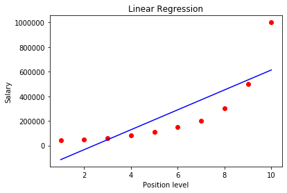
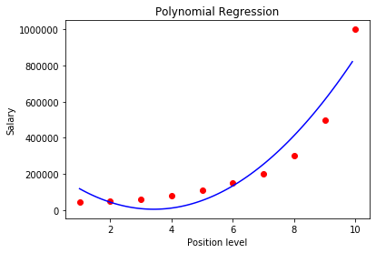

Python 3.7.4 (default, Aug 9 2019, 18:34:13) [MSC v.1915 64 bit (AMD64)]
Type "copyright", "credits" or "license" for more information.
IPython 7.8.0 -- An enhanced Interactive Python.
In [1]: import numpy as np
...: import pandas as pd
...: import matplotlib.pyplot as plt
...:
...: dataset =pd.read_csv("Position_Salaries.csv")
...: X=dataset.iloc[:,1:2].values
...: Y=dataset.iloc[:,2].values
In [2]: X
Out[2]:
array([[ 1],
[ 2],
[ 3],
[ 4],
[ 5],
[ 6],
[ 7],
[ 8],
[ 9],
[10]], dtype=int64)
In [3]: Y
Out[3]:
array([ 45000, 50000, 60000, 80000, 110000, 150000, 200000,
300000, 500000, 1000000], dtype=int64)
In [4]: from sklearn.linear_model import LinearRegression
...: r1=LinearRegression()
...: r1.fit(X,Y)
Out[4]: LinearRegression(copy_X=True, fit_intercept=True, n_jobs=None, normalize=False)
In [5]: r1
Out[5]: LinearRegression(copy_X=True, fit_intercept=True, n_jobs=None, normalize=False)
In [6]: from sklearn.preprocessing import PolynomialFeatures
...: r2=PolynomialFeatures(degree =2)
...: X_poly = r2.fit_transform(X)
...: lin_reg2= LinearRegression()
...: lin_reg2.fit(X_poly,Y)
Out[6]: LinearRegression(copy_X=True, fit_intercept=True, n_jobs=None, normalize=False)
In [7]: X_poly
Out[7]:
array([[ 1., 1., 1.],
[ 1., 2., 4.],
[ 1., 3., 9.],
[ 1., 4., 16.],
[ 1., 5., 25.],
[ 1., 6., 36.],
[ 1., 7., 49.],
[ 1., 8., 64.],
[ 1., 9., 81.],
[ 1., 10., 100.]])
In [8]: plt.scatter(X,Y,color='red')
...: plt.plot(X,r1.predict(X),color='blue')
...: plt.title("Linear Regression")
...: plt.xlabel("Position level")
...: plt.ylabel("Salary")
...: plt.show()

In [9]: X_grid = np.arange(min(X),max(X),0.1)
...: X_grid = X_grid.reshape(len(X_grid),1)
In [10]: X_grid
Out[10]:
array([[1. ],
[1.1],
[1.2],
[1.3],
[1.4],
[1.5],
[1.6],
[1.7],
[1.8],
[1.9],
[2. ],
[2.1],
[2.2],
[2.3],
[2.4],
[2.5],
[2.6],
[2.7],
[2.8],
[2.9],
[3. ],
[3.1],
[3.2],
[3.3],
[3.4],
[3.5],
[3.6],
[3.7],
[3.8],
[3.9],
[4. ],
[4.1],
[4.2],
[4.3],
[4.4],
[4.5],
[4.6],
[4.7],
[4.8],
[4.9],
[5. ],
[5.1],
[5.2],
[5.3],
[5.4],
[5.5],
[5.6],
[5.7],
[5.8],
[5.9],
[6. ],
[6.1],
[6.2],
[6.3],
[6.4],
[6.5],
[6.6],
[6.7],
[6.8],
[6.9],
[7. ],
[7.1],
[7.2],
[7.3],
[7.4],
[7.5],
[7.6],
[7.7],
[7.8],
[7.9],
[8. ],
[8.1],
[8.2],
[8.3],
[8.4],
[8.5],
[8.6],
[8.7],
[8.8],
[8.9],
[9. ],
[9.1],
[9.2],
[9.3],
[9.4],
[9.5],
[9.6],
[9.7],
[9.8],
[9.9]])
In [11]: plt.scatter(X,Y,color='red')
...: plt.plot(X_grid,lin_reg2.predict(r2.fit_transform(X_grid)),color='blue')
...: plt.title("Polynomial Regression")
...: plt.xlabel("Position level")
...: plt.ylabel("Salary")
...: plt.show()

In [12]: